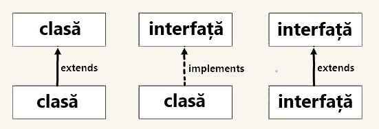

Abstractizare în Java
Abstractizarea este un proces de ascundere a detaliilor de implementare și de afișare a
funcționalității utilizatorului.
O altă modalitate, arată utilizatorului doar lucruri esențiale și ascunde detaliile interne, de exemplu,
trimiterea de SMS-uri unde introduceți textul și trimiteți mesajul. Nu știți procesarea internă despre
livrarea mesajului.
Abstracția vă permite să vă concentrați asupra a ceea ce face obiectul în loc de modul în care îl
face.
Există două moduri de a realiza abstractizarea în Java:
- Clasă abstractă (0 la 100%)
- Interfață (100%)
Clasă abstractă în Java
O clasă declarată abstractă este cunoscută sub numele de clasă abstractă. Poate avea metode abstracte și
non-abstracte. Trebuie extins și metoda sa implementată. Nu poate fi instanțiat.
De reținut:
- O clasă abstractă trebuie declarată cu un cuvânt cheie abstract.
- Poate avea metode abstracte și non-abstracte.
- Nu poate fi instanțiat.
- Poate avea și constructori și metode statice.
- Poate avea metode finale care vor forța subclasa să nu schimbe corpul metodei.
Sintaxa:
abstract class <nume_clasa>{}
Exemplu: În acest exemplu, Masina este o clasă abstractă care conține o singură metodă abstractă rulată. Implementarea sa este asigurată de clasa Honda.
Honda.java
public class Masina{
void porneste();
}
public class Honda extends Masina{
void porneste(){ System.out.println("conduceti cu grija"); }
public static void main(String args[]){
Masina obj = new Honda(); //cream obiectul
obj.porneste(); //apelam metoda
}
}
Afișare:
conduceti cu grija
Interfață în Java
O interfață în Java este un plan al unei clase. Are constante statice și metode abstracte.
Interfața în Java este un mecanism de realizare a abstractizării. Pot exista numai metode abstracte în
interfața Java, nu corpul metodei. Este folosit pentru a realiza abstracția și moștenirea multiplă în
Java.
Cu alte cuvinte, puteți spune că interfețele pot avea metode și variabile abstracte. Nu poate avea un corp
de metodă.
Interfața Java reprezintă, de asemenea, relația ESTE-UN.
Nu poate fi instanțiat la fel ca clasa abstractă.
De la Java 8, putem avea metode implicite și statice într-o interfață.
De la Java 9, putem avea metode private într-o interfață.
De ce să folosim interfețele: Există în principal trei motive pentru a utiliza interfața. Acestea sunt prezentate mai jos.
- Este folosit pentru a realiza abstractizarea.
- Prin interfață, putem sprijini funcționalitatea moștenirii multiple.
- Poate fi folosit pentru a realiza o cuplare slabă.
Sintaxa:
interface <nume_interfata> {}
Exemplu: În acest exemplu, interfața imprimabilă are o singură metodă, iar implementarea sa este furnizată în clasa A6.
Honda.java
interface Printable{
void afiseaza();
}
public class A6 implements Printable{
public void afiseaza(){ System.out.println("Hello"); }
public static void main(String args[]){
Masina obj = new Honda();
obj.porneste();
}
}
Afișare:
Hello
Relația dintre clase și interfețe
Așa cum se arată în figura dată mai jos, o clasă extinde o altă clasă, o interfață extinde o altă interfață, dar o clasă implementează o interfață.

Dacă o clasă implementează mai multe interfețe sau o interfață extinde mai multe interfețe, este cunoscută sub numele de moștenire multiplă.